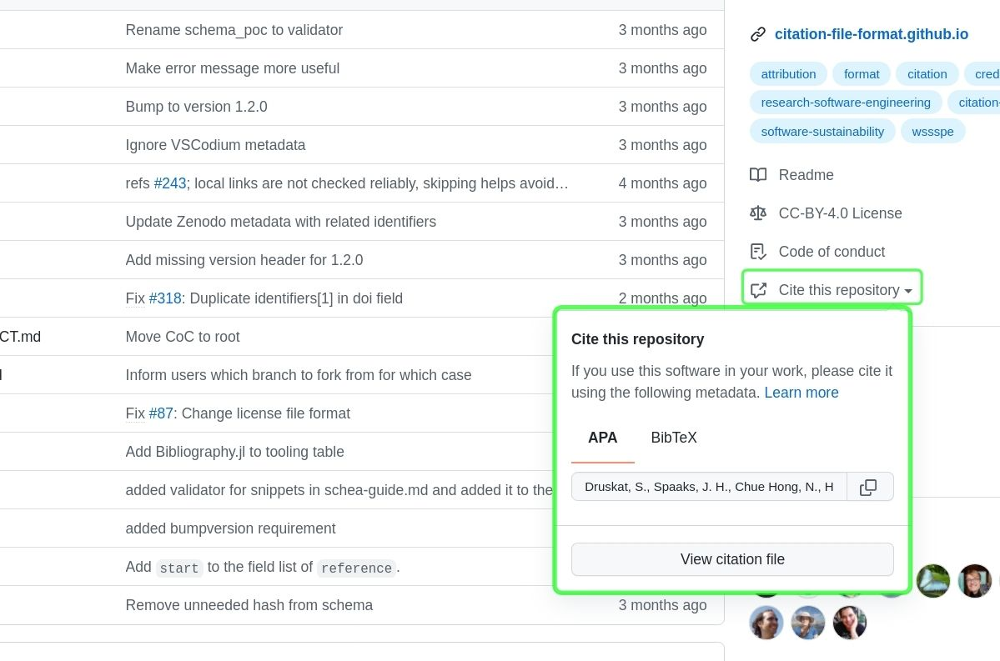

The Citation File Format lets you provide citation metadata, for software or datasets, in plaintext files that are easy to read by both humans and machines.
Research software developers get recognition by making software citable. The Turing Way project illustration by Scriberia. Zenodo. http://doi.org/10.5281/zenodo.3332807#
To provide this metadata, start by writing a CITATION.cff file and include it with your software or dataset.
A CITATION.cff file aggregates the information in a key-value format that can be easily interpreted and updated by humans, and easily parsed and converted with existing tools.
There are great advantages when using a CITATION.cff file for the citation information for your software!
It’s easier for you:
When you host your software source code on GitHub and have a CITATION.cff in your repository, you can use the Zenodo-GitHub integration to automatically publish new releases of the software.
Zenodo will use the information from CITATION.cff and show it together with the publication.
You don’t have to edit this information manually on Zenodo anymore.
They can directly use the citation information from CITATION.cff to cite your software.
If your source code is on GitHub, they will show the citation information in the sidebar as a formatted citation, and also in the BibTeX format.
Users can copy either, paste it into their manuscripts, and/or cite your software correctly.
If they use the Zotero reference manager, they can import the citation metadata directly from the CITATION.cff file in the GitHub repository to their reference manager.
The CITATION.cff is a YAML file with its own schema definition.
The schema defines the rules for each field, and which fields are required and which ones are optional.
The user must follow these rules in order to create a valid CITATION.cff file.
A minimal example of a valid CITATION.cff file, that only contains the required keys, would look like this:
However, adding more fields can help you create more descriptive metadata of your software.
The example below also provides important information of software such as version, release date, DOI, license, keywords.
The complete list of fields is described in the CFF schema guide.
In the next section, you can find out which tools can help you create and use the CITATION.cff file.
There are two ways of creating a CITATION.cff file.
Use cffinit, a web application which guides you through the process of creating your citation file.
The cffinit has a few advantages compared to manual editing such as
no need for installing extra tools;
no need for manual validation;
guidance for each fields;
visual feedback to indicate issues.
We suggest using cffinit as it simplifies the creation and validation.
For more details on using cffinit see Create a CITATION.cff using cffinit.
Edit the file manually in your favorite code editor.
The disadvantages of this method are installing the required tools on your system and doing the validation yourself. Also, the error messages of the validation can be relatively long and difficult to understand.
Once you have a CITATION.cff file, it needs to be validated to make sure there are no issues.
You can validate your CITATION.cff file on the command line with the cffconvert Python package.
When you need to update your CITATION.cff file, for example to add an author or to change the information about releases, you will need to edit the file manually. It is recommended to update your CITATION.cff file before making a software release.
If you have found software or datasets that contain a CITATION.cff, there are a few ways to obtain the reference information to cite them in your publication.
You can use one of the tools, such as cffconvert command line program, to convert your CITATION.cff file to one of the supported formats, such as APA, BibTeX or EndNote.
Alternatively, if the software or datasets you want to cite are available on GitHub, you can use GitHub’s interface to copy the reference in either APA or BibTeX formats by clicking the “Cite this repository” button (see the green area in the image below).
For more details on software citation on GitHub please see GitHub’s guide on software citation.

“Cite this repository” automatically converts the CITATION.cff file to APA’s and BibTex’s format.#
Note
“Cite this repository” button only appears when there is a CITATION.cff file in the repository.
Several tools exist to facilitate the creation and validation of CITATION.cff files, as well as the conversion to and from other formats.
The Citation File Format’s repository provides a list of all known tools for this.


{kind=link}